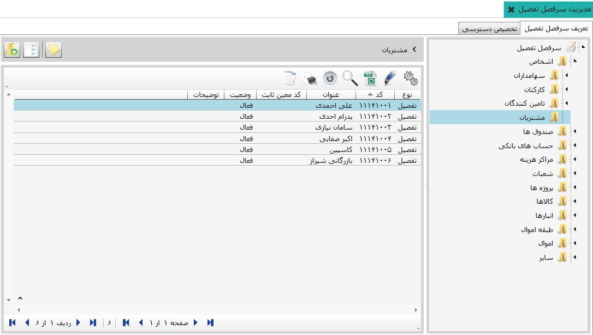

حساب های معین همانند گروه های حساب و حساب های کل، زیر شاخه پذیر هستند، با این تفاوت که حساب های تفصیل به صورت مستقل و یکتا (unique) تعریف شده و در محاسبات از طریق لایه های حساب به معین های دلخواه متصل خواهند شد. اکنون این امکان فراهم گردیده است، که معین های مورد نظرتان را در زیر شاخه های مربوطه تعریف نمایید، این امر به کمک حساب های تفصیل انجام می شود. در صورتی که نیاز به حساب معین و اطلاعات بیشتری در سیستم وجود داشته باشد، از حساب تفصیل استفاده خواهید کرد. اکنون نحوه تعریف «حساب تفصیل» توضیح داده می شود. اکنون روی منوی تعریف «سرفصل تفصیل» کلیک کنید، تصویر زیر مشاهده می شود:

سرفصل های تفصیل در نمودار درختی شکل بالا مشخص هستند، در داخل هر یک از این سر فصل ها، تفصیل های مربوط به آنها وجود دارند. برای مشاهده سرفصل های تفصیل مورد نظر، از نمودار درختی انتخاب نمایید، اکنون در جدول در حال اجرا تفصیل های مربوط به آن را مشاهده خواهید کرد. در تصویر زیر تفصیل های مربوط به گروه اشخاص را مشاهده می نمایید: 
 تعیین معین ثابت (Ctrl + M) :
با استفاده از این ابزار شما
می توانید برای تفصیل و یا گروه های تفصیل
تعریف شده در سیستم «معین ثابت» مشخص نمایید، لطفا
روی این آیکن کلیک کنید، صفحه زیر اجرا می شود:
تعیین معین ثابت (Ctrl + M) :
با استفاده از این ابزار شما
می توانید برای تفصیل و یا گروه های تفصیل
تعریف شده در سیستم «معین ثابت» مشخص نمایید، لطفا
روی این آیکن کلیک کنید، صفحه زیر اجرا می شود:

این قسمت «تنها» برای سرفصل تفصیل «سایر تفصیل ها»
می توانید حساب تفصیل ایجاد کنید،
لازم به توضیح است که برای ایجاد گروه و یا
حساب تفصیل در سرفصل های اشخاص، صندوق ها و موارد مشابه باید از
اطلاعات پایه و مشترک
اقدام نمایید. که در راهنمای مربوط به آن توضیح داده شده است.
ابتدا نحوه ایجاد حساب تفصیل را برای
سرفصل سایر تفصیل ها ارائه می شود:

از نمودار درختی، «سایر» را
انتخاب کنید، سپس گزینه اضافه را از جدول سمت
چپ انتخاب نمایید تا تصویر زیر نمایان شود:
 در صفحه اجرا شده، می توانید با توجه به
نیاز سازمانی گروه تفصیل یا حساب تفصیل ایجاد کنید.
با وارد کردن عنوان گروه یا تفصیل مورد نظر،
دکمه تایید را کلیک نمایید.
در صفحه اجرا شده، می توانید با توجه به
نیاز سازمانی گروه تفصیل یا حساب تفصیل ایجاد کنید.
با وارد کردن عنوان گروه یا تفصیل مورد نظر،
دکمه تایید را کلیک نمایید.